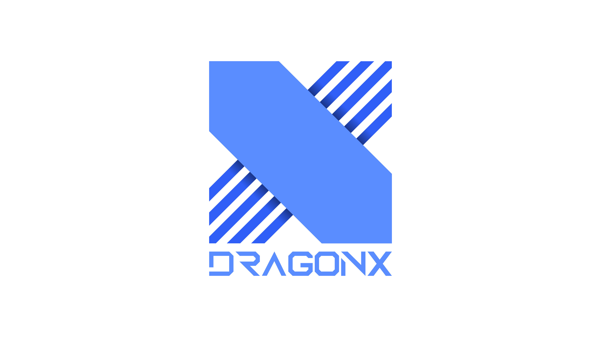

- T1
- GenG
- DRX
게임 컨텐츠 제작 및 배포, 게임 전문 마케팅 및 경영, 관리(통합 매니지먼트), 게임 아카데미 사업, 프로선수 육성 및 관리 등의 업무를 하고 있다. 사모펀드 운용사 ATU파트너스가 소유하고 있으며 리그 오브 레전드 팀을 운영하고 있다.

2019년 10월 10일에 로고가 변경되었는데 팬들은 강렬했던 전 로고에 비해 아쉽다는 반응이 나왔다. 또한 바뀐 로고의 모습이 구글의 모기업인 알파벳의 비밀 연구시설인 X 연구소의 로고와 흡사하다.